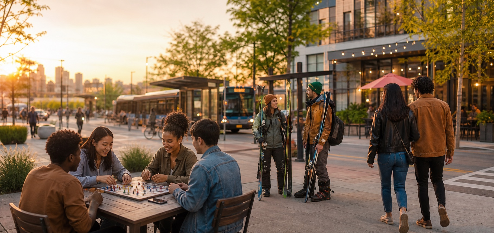

Board games tonight
4 people nearby · Capitol Hill

Tools for real-life connection
We build technology that helps neighbors find their people, make plans, and turn cities into places where belonging is easier to discover.
Our mission
Social Cities creates simple, human-centered tools for the moments when people want company but do not yet know who to ask. Our products help people move from intent to invitation, and from invitation to real shared time.
What we are building
Plus One helps people find nearby company for the things they already want to do, from board game nights and ski carpools to concert buddies, pickup sports, coffee walks, and local adventures.
4 people nearby · Capitol Hill
2 open seats · 6:30 AM
Indie show · Friday
Find people who want to do the same thing at the same time, nearby.
Turn shared interests into small groups that keep showing up.
Make civic life feel more connected, active, and approachable.
For event hosts
We are also building tools for event hosts, organizers, and venues who want stronger relationships with the people around them. The goal is to help local events become repeatable social anchors, not one-off calendar listings.
How we build
People connect faster when the invitation is concrete: what, where, when, and why it might be fun.
We design for neighborhood-scale discovery, shared context, and safer first steps into new groups.
The product succeeds when people close their phones and spend meaningful time together.